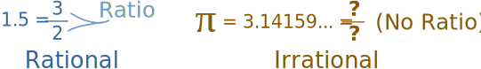

Irrational Numbers
An Irrational Number is a real number that cannot be written as a simple fraction:

1.5 is rational, but π is irrational
Irrational means not Rational (no ratio)
Let's look at what makes a number rational or irrational ...
Rational Numbers
A Rational Number can be written as a Ratio of two integers (ie a simple fraction).
Example: 1.5 is rational, because it can be written as the ratio 3/2
Example: 7 is rational, because it can be written as the ratio 7/1
Example 0.333... (3 repeating) is also rational, because it can be written as the ratio 1/3
Irrational Numbers
But some numbers cannot be written as a ratio of two integers ...
...they are called Irrational Numbers.
Example: π (Pi) is a famous irrational number.

π = 3.1415926535897932384626433832795... (and more)
We cannot write down a simple fraction that equals Pi.
The popular approximation of 22/7 = 3.1428571428571... is close but not accurate.
Another clue is that the decimal goes on forever without repeating.
Cannot Be Written as a Fraction
It is irrational because it cannot be written as a ratio (or fraction),
not because it is crazy!
So we can tell if it is Rational or Irrational by trying to write the number as a simple fraction.
Example: 9.5 can be written as a simple fraction like this:
9.5 = 192
So it is a rational number (and so is not irrational)
Here are some more examples:
| Number | As a Fraction | Rational or Irrational? |
||
|---|---|---|---|---|
| 1.75 | 74 | Rational | ||
| .001 | 11000 | Rational | ||
| √2 (square root of 2) |
? | Irrational ! |
Square Root of 2
Let's look at the square root of 2 more closely.
 |
When we draw a square of size "1", what is the distance across the diagonal? |
The answer is the square root of 2, which is 1.4142135623730950...(etc)
But it is not a number like 3, or five-thirds, or anything like that ...
... in fact we cannot write the square root of 2 using a ratio of two numbers ...
... (you can learn why on the Is It Irrational? page) ...
... and so we know it is an irrational number.
Famous Irrational Numbers
|
Pi is a famous irrational number. People have calculated Pi to over a quadrillion decimal places and still there is no pattern. The first few digits look like this: 3.1415926535897932384626433832795 (and more ...) |
|||||
|
The number e (Euler's Number) is another famous irrational number. People have also calculated e to lots of decimal places without any pattern showing. The first few digits look like this: 2.7182818284590452353602874713527 (and more ...) |
||||||
|
The Golden Ratio is an irrational number. The first few digits look like this: 1.61803398874989484820... (and more ...) |
||||||
|
Many square roots, cube roots, etc are also irrational numbers. Examples:
|
But √4 = 2 is rational, and √9 = 3 is rational ...
... so not all roots are irrational.
Note on Multiplying Irrational Numbers
Have a look at this:
- π × π = π2 is known to be irrational
- But √2 × √2 = 2 is rational
So be careful ... multiplying irrational numbers might result in a rational number!
Fun Facts ....
Apparently Hippasus (one of Pythagoras' students) discovered irrational numbers when trying to write the square root of 2 as a fraction (using geometry, it is thought). Instead he proved the square root of 2 could not be written as a fraction, so it is irrational.
But followers of Pythagoras could not accept the existence of irrational numbers, and it is said that Hippasus was drowned at sea as a punishment from the gods!